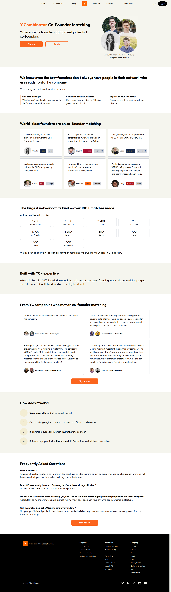
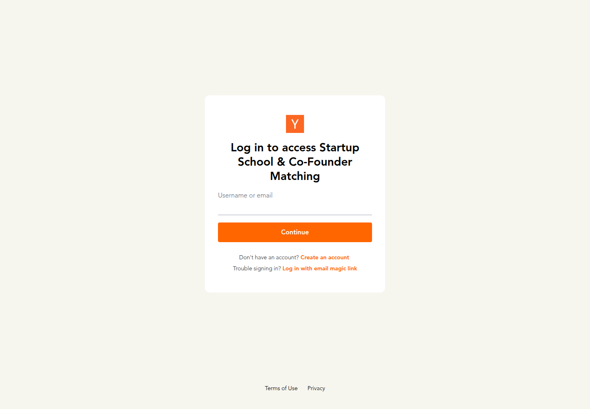
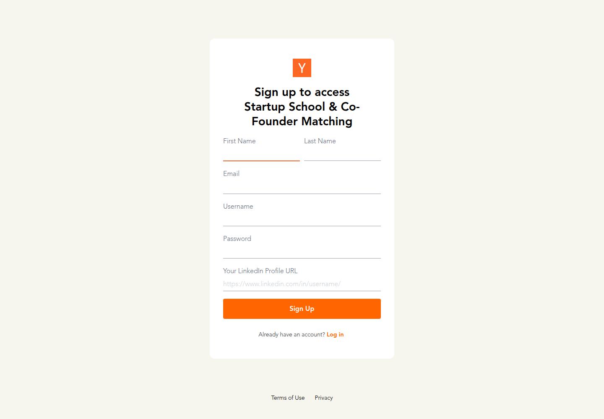
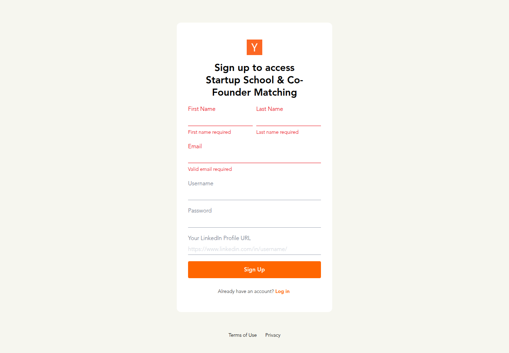

Profile
- Company
- YC Co-Founder Matching
- Url
- https://www.ycombinator.com/cofounder-matching
- Source Category
- Cofounder-matching platforms
- Research Status
- Deep Cited Research / Draft Complete
- Current Status
- live - confirmed via direct fetch of https://www.ycombinator.com/cofounder-matching (HTTP 200, active signup CTA, current 2026 footer copyright). No dead links, no rebrand/hijack signs.
- Founded Launch Year
- Launched July 2021 (YC blog announcement 'Y Combinator Launches Co-Founder Matching Platform', ycombinator.com/blog/co-founder-matching); some secondary summaries cite a broader July 2022 general-availability rollout. Parent org Y Combinator founded 2005.
- Company Age
- ~5 years since 2021 beta launch (part of Y Combinator, founded 2005, ~21 years)
- Hq Country
- US (San Francisco, CA - Y Combinator HQ)
- Operating Area
- Global, run through YC's Startup School; active-profile hubs concentrated in US, UK, India (per own site: SF 3,200, NYC 3,000, London 2,900, Bangalore 1,900); users reported across 146-190 countries per RocketDevs guide
- Target Users
- Aspiring and current founders/technical & non-technical co-founder seekers, with or without an idea, generally the YC/Startup School applicant pool
- Product Category
- cofounder matching; founder-investor / capital; NDA/e-sign; AI
Product Flows
- Swipe Card Interface
- no - profile-browse/search + invite-to-connect model, not a swipe-card UI (per own site 'How does it work' section and RocketDevs walkthrough)
- Mutual Match
- yes
- Ai Matching Scoring
- partial/unclear - site says a 'matching engine' built from YC's founding-team knowledge surfaces fitting profiles, but no public documentation of ML/AI scoring methodology; treated as algorithmic filtering rather than confirmed AI/ML scoring
- Ai Deck Scoring
- not found / no public source - no pitch-deck upload or AI deck-scoring feature referenced anywhere in official docs or third-party guides
- Founder To Founder Flow
- yes - profile creation plus invite/accept match flow
- Founder To Investor Flow
- Not offered on Co-Founder Matching itself - YC's founder-investor path runs through separate YC properties (Demo Day, 'Verify Founders' for investors, YC's own investor network) rather than the cofounder-matching product. No investor-facing swipe/browse/match flow exists inside this specific product.
- Project Profiles
- yes
- Messaging Collaboration
- Direct in-platform messaging unlocks after a mutual match/accepted invite; no group chat, task boards, or file-sharing tools are documented beyond 1:1 messaging.
- Mobile App
- yes (indirect) - Y Combinator has a general 'Y Combinator' app on the App Store (apps.apple.com/us/app/y-combinator/id6464718392) covering YC programs/content; co-founder matching itself is primarily a web product accessed via ycombinator.com and there is no evidence of a matching-specific native swipe app
- Web App
- yes
Security & Documents
- Nda Gated Unlock
- no - not found as a feature of this product. Original batch-1 data flagged 'yes' but no primary or secondary source describes an NDA gate; profiles are simply private to approved co-founder-matching members ('not public to the internet... visible only to other people who have been approved'), which is an access-approval gate, not a per-connection NDA/e-sign gate. Corrected to 'no / not found'.
- Data Room
- not found / no public source
- E Signature
- not found / no public source
- Meeting Prep Ai Briefing
- not found / no public source - no AI-generated meeting brief, compatibility summary, or agenda-prep feature is documented anywhere
Pricing, Funding & Traction
- Pricing Model
- Free - 'co-founder matching is a completely free product' (official FAQ). No equity taken, no paid tier.
- Business Model
- Free talent-matching feature offered as part of YC's broader founder-support ecosystem (Startup School); monetization is indirect via YC's core accelerator/investment business, not via this product directly.
- Total Funding
- not applicable - Y Combinator is a private accelerator/fund, not a VC-funded startup itself; Co-Founder Matching is an internal free product, no separate funding raised for it
- Funding Rounds
- not applicable
- Investors
- not applicable (YC itself is the investor/accelerator, not an investee)
- Funding Source Type
- Self-funded internal product of Y Combinator
- Last Funding Date
- not applicable
- Users Traction
- 100,000+ total matches made (largest network of its kind per own site); 40,000+ profiles per RocketDevs guide; beta stats at 2021 launch were 9,000 matches across 4,500 founders; median ~100 days from signup to match; 55% of matches occur within the same country (sources: ycombinator.com/cofounder-matching; ycombinator.com/blog/co-founder-matching; rocketdevs.com/blog/yc-cofounder-matching-complete-guide)
- Deals Funding Facilitated
- Not tracked as $ deal value; success is measured in co-founder pairs formed. Documented outcomes include multiple pairs later accepted into YC batches (e.g., Whalesync's Curtis & Matthew, AccessOwl's Philip & Mathias, Pledge Health's Andrew & Shreya, clearspace's Oliver & Royce - all cited as testimonials on ycombinator.com/cofounder-matching), and Sequin (YC S21) cited by YC blog as an early success story.
- Partnerships
- Operates as part of YC's Startup School free program; no named third-party commercial partnerships found.
- Media Coverage
- YC's own blog post 'Y Combinator Launches Co-Founder Matching Platform' (blog.ycombinator.com); third-party explainer/guide coverage from RocketDevs (rocketdevs.com) and CoffeeSpace comparison blog (coffeespace.com/blog-post/comparing-top-5-cofounder-matching-platforms); no major TechCrunch/mainstream tech-press launch coverage found in this pass.
- Product Update Activity
- Active - platform remains linked in YC's primary site navigation as of 2026 and continues to be promoted in YC's Startup School materials; no changelog publicly available.
- Acquisition Rebrand History
- None found - has operated under the YC brand since 2021 launch with no rebrand or acquisition
Scores
- Product Overlap Score
- 4
- Feature Maturity Score
- 3
- Market Traction Score
- 5
- Funding Strength Score
- 1
- Ai Depth Score
- 2
- Nda Security Strength Score
- 1
- Network Moat Score
- 5
- Direct Threat Score
- 3.1
- Source Confidence
- High
Evidence Notes
- Primary Sources
- https://www.ycombinator.com/cofounder-matching
https://www.ycombinator.com/blog/co-founder-matching
https://apps.apple.com/us/app/y-combinator/id6464718392 - Secondary Sources
- https://rocketdevs.com/blog/yc-cofounder-matching-complete-guide
https://www.coffeespace.com/blog-post/comparing-top-5-cofounder-matching-platforms
https://kwfoundation.org/wp-content/uploads/2023/07/YC-Guide-to-Co-founder-Matching.pdf
https://en.wikipedia.org/wiki/Y_Combinator - Unsupported Claims
- AI/ML methodology behind the 'matching engine' is not publicly documented in detail - treated conservatively as algorithmic/rules-based rather than confirmed deep AI. NDA-gating claim from the original batch-1 pass could not be substantiated and was corrected to 'no/not found'.
- Contradictions
- Batch-1 input listed nda_gated_unlock as 'yes' - no source found to support this; corrected. Launch year has conflicting secondary reports (2021 beta vs 2022 broader rollout) - both noted.
- Last Checked
- 2026-07-19
- Notes
- Free, YC-branded, no equity/strings; largest documented network among the 5 (100K+ matches, 40K+ profiles) but weakest on security/NDA/data-room/AI-deck-scoring maturity relative to BizMatch's three-paths-of-interaction model, since it only covers founder-to-founder and has no investor or project-swipe layer.
Registration Flow
Research date: 2026-07-19. Screenshots are sanitized public copies from the private registration-flow capture set; credentials, tokens, verification links/codes, browser chrome, and private identifiers are not intentionally published.
Outcome: stopped at required truthful-details / submission boundary.
Stop point: Official YC account creation form after empty-form validation, before entering any personal data or activating a populated Sign Up submission
Blocker / boundary: YC account creation requires personal identity/profile information beyond the authorized email address and site-specific password, including first name, last name, username, and a LinkedIn profile URL. Those details were not provided in the authorized credential file, and fabricating them would create an inaccurate account.
- Official Co-Founder Matching landing page. YC's official landing page presents the free Co-Founder Matching product, explains that users create a profile and receive compatible profiles, and offers Sign up and Sign in controls. The page states that the service is free, takes no equity, and that approved users' profiles are visible only to other approved Co-Founder Matching users.
- Shared YC account entry. The Sign up control redirects to Y Combinator's official account service for Startup School and Co-Founder Matching. The first screen supports an existing username/email login, email magic-link login, or Create an account.
- YC account creation form. Create an account opens a sign-up form requesting First Name, Last Name, Email, Username, Password, and a LinkedIn profile URL before the Sign Up control.
- Required-field validation and stop point. Submitting the empty form produced client-side validation messages for First Name, Last Name, and a valid Email while leaving the page in place. No personal data or credentials were entered. The evidence capture stopped because the authorized credential file supplies an email address and site-specific password but not the identity/profile details needed to create a truthful YC account.



